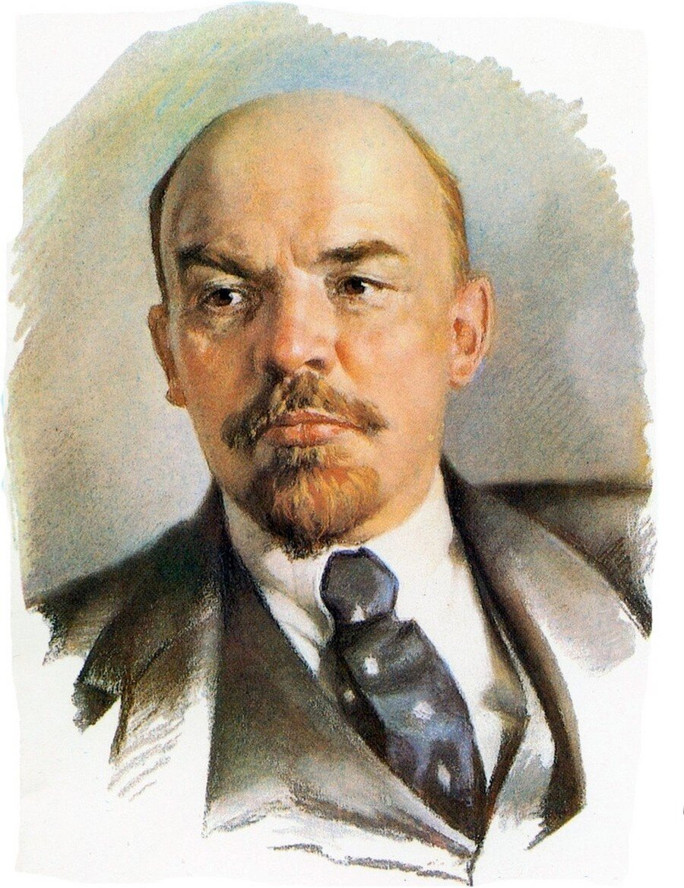

Ленин Владимир Ильич — российский революционер, крупный теоретик марксизма, советский политический и государственный деятель, создатель Российской социал-демократической рабочей партии (большевиков), главный организатор и руководитель Октябрьской революции 1917 года в России, первый Председатель Совета народных комиссаров РСФСР и Совета народных комиссаров СССР, создатель первого в мировой истории социалистического государства.

Основные события правления:
-
25 октября(7 ноября) 1917 г.
Провозглашение РСФСР ( юридически оформлена 3-м Всероссийским съездом Советов 10-18 (23-31) января 1918)
-
7(20) декабря 1917 г.
Постановление СНК РСФСР о создании Всероссийской Чрезвычайной Комиссии - ВЧК
-
3 марта 1918
Заключение сепаратного мира с Германией (Брестский мир)
-
11 марта 1918
Переезд СНК и ЦК РКП(б) в Москву (смена государственной столицы)
-
1918 - 1920 гг. (по некоторым данным, в Туркестане - до 1938 г.)
Гражданская война
-
май 1918 г.
Декрет ВЦИК и СНК о продовольственной диктатуре
-
1919 - 1920
Политика "военного коммунизма"
-
1921 г.
Провозглашение новой экономической политики - НЭП
-
март 1921 г. - 10-й съезд РКП(б)
Резолюция "О единстве партии", запрещавшая фракционную деятельность.
-
1922 г.
Голод в Поволжье
-
30 декабря 1922 г.
Образование СССР
Информация о Владимире Ленине
| Факт | Описание |
|---|---|
| Полное имя | Владимир Ильич Ульянов |
| Дата рождения | 22 апреля 1870 |
| Место рождения | Симбирск, Российская империя (ныне Ульяновск, Россия) |
| Дата смерти | 21 января 1924 |
| Место смерти | Горки Ленинские, Российская Советская Федеративная Социалистическая Республика (ныне Ленинские Горы, Россия) |
| Занимаемая должность | Глава государства Советский Союз (РСФСР в 1917-1922 гг., СССР в 1922-1924 гг.) |
| Идеология | Марксизм-ленинизм |
| Важные произведения | "Империализм, как высшая стадия капитализма", "Государство и революция", "Что делать?", "Материализм и эмпириокритицизм" |
Смерть
21 января 1924 года, в 18:50 по EET, Владимир Ленин, лидер Октябрьской революции, первый лидер и один из
основателей Советского Союза, скончался в Горках в возрасте 53 лет после впадения в кому. Официальной
причиной смерти было указано неизлечимое заболевание кровеносных сосудов. Ленину были устроены
государственные похороны, а затем 27 января он был похоронен в специально возведенном мавзолее. Организацией
похорон занимался Центральный
комитет Коммунистической партии Советского Союза.
Панихида
23 января гроб с телом Ленина был перевезен поездом из Горки в Москву и выставлен в Колонном зале Дома
союзов, где он оставался три дня. 27 января тело Ленина было доставлено на Красную площадь в
сопровождении военной музыки. Собравшиеся слушали серию речей, произнесенных Михаилом Калининым, Григорием
Зиновьевым
и Иосифом Сталиным, но, что
примечательно, не
Львом
Троцким , который выздоравливал на Кавказе.
Позже Троцкий утверждал, что ему была указана неправильная дата похорон. Секретарь Сталина,Борис Бажанов
позже подтвердил это сообщение, заявив, что "Сталин был верен себе: он послал телеграмму Троцкому, который
находился на Кавказе на лечении, указав ложную дату похорон Ленина".
Французский историк Пьер Бруэ также
сослался на московские архивы, которые задокументировали письменную переписку между Сталиным и секретарем
абхазской партии Нестором Лакобой, в качестве доказательства усилий Сталина удержать Троцкого в Сухуми во
время похорон Ленина. Троцкий также отдал дань Ленину своей короткой книгой 1925 года "Ленин".
Алексей Рыков также отсутствовал на похоронах, поскольку уехал с женой в Италию и перенес грипп.Впоследствии
тело было помещено в склеп временного деревянного мавзолея (вскоре его заменят современным мавзолеем Ленина)
у Кремлевской стены. Несмотря на мороз, на них присутствовали десятки тысяч человек.
Несмотря на протесты Надежды Крупской, вдовы Ленина, тело Ленина было забальзамировано, чтобы сохранить его
для длительного публичного показа в мавзолее на Красной площади. Командующий Московским гарнизоном издал
приказ о выставлении почетного караула у мавзолея, в соответствии с которым его в просторечии называли
"Часовым номер один".В процессе бальзамирования мозг Ленина был удален; в 1925 году был создан институт для
его препарирования, выявивший, что у Ленина был тяжелый склероз.
По словам секретаря Сталина Бориса Бажанова, Сталин ликовал по поводу смерти Ленина, “публично надевая маску
скорби”. Аналогичным образом, старый большевик Григорий Сокольников сообщил, что Сталин пренебрежительно
отозвался о кончине Ленина, сказав, что он "не мог умереть как настоящий лидер!”.
Пожалуйста, заполните форму, если вам понравилась данная статья. Обязательные поля помечаны*